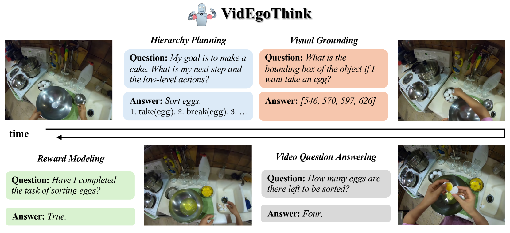
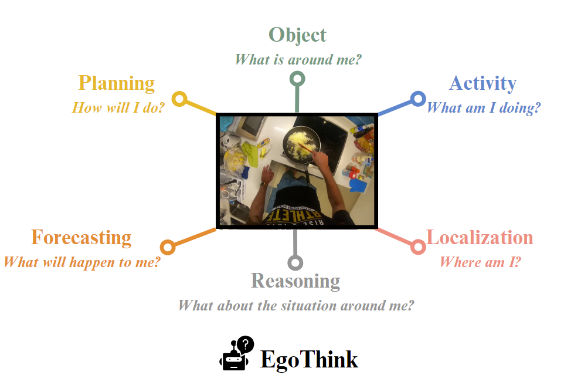
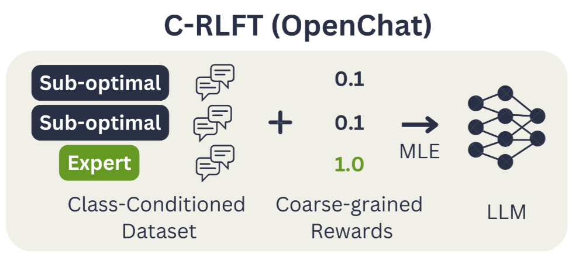
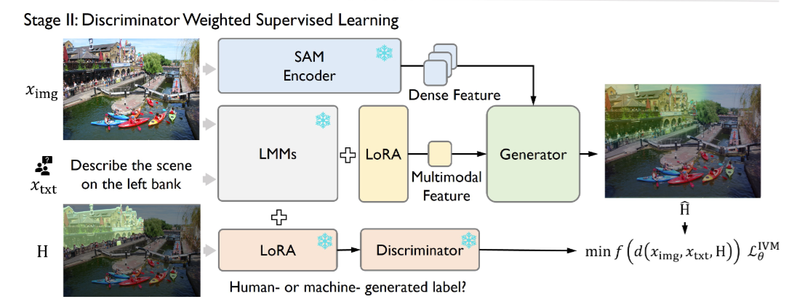
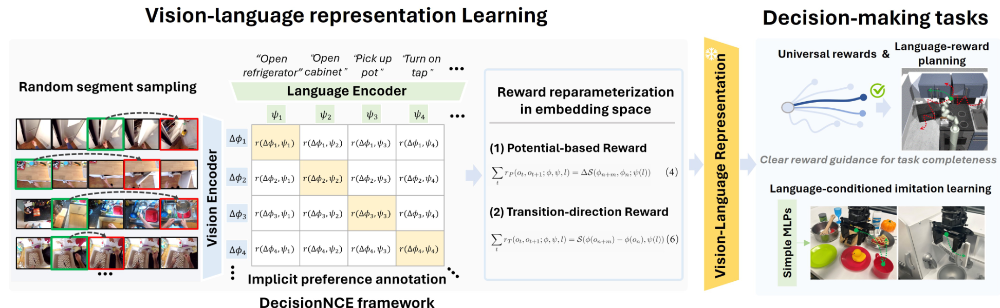
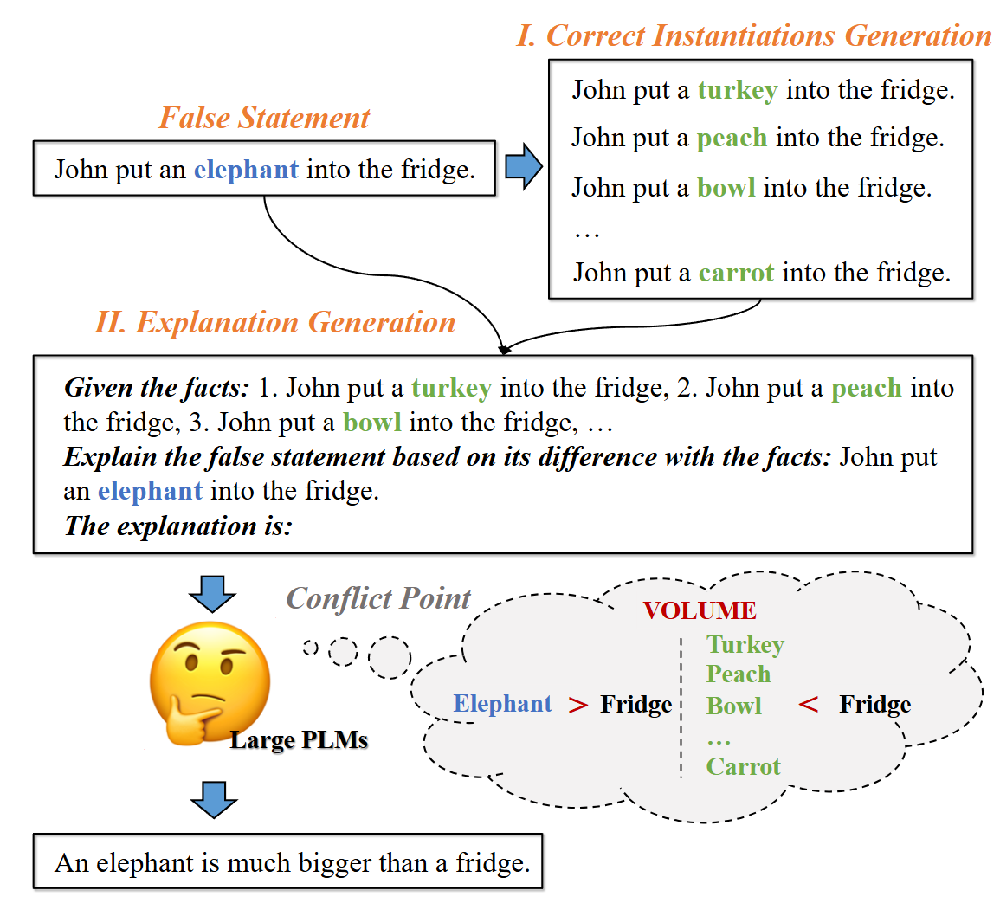
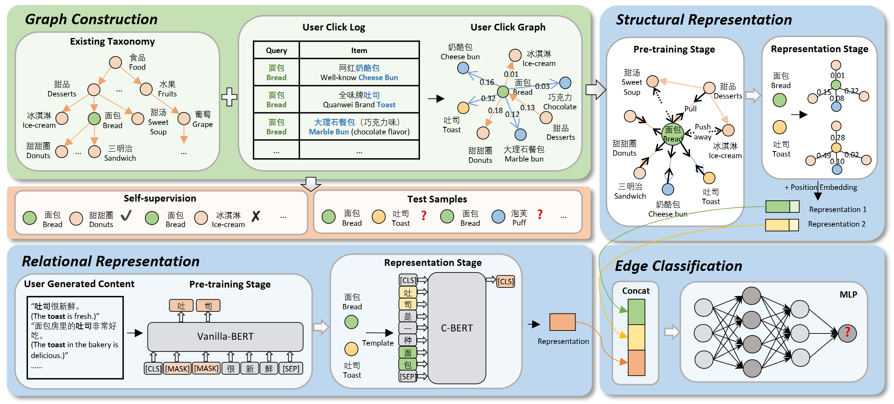
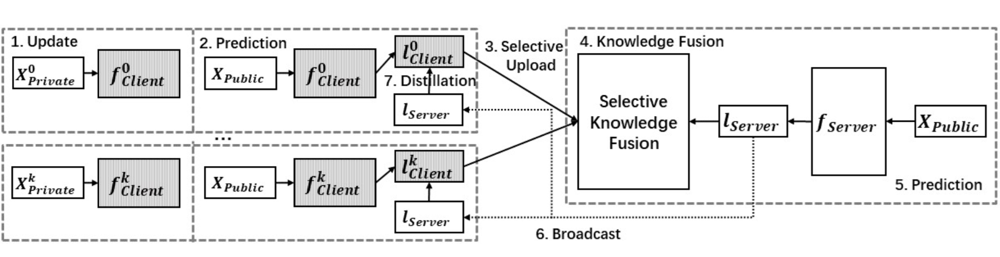

|
Sijie (Ada) Cheng 我目前是中国北京清华大学计算机科学与技术系的二年级博士生，由刘洋教授指导，隶属于THUNLP与清华大学智能产业研究院（AIR）。此前，我于 2023 年获得复旦大学硕士学位，由肖仰华教授在Knowledge Work Lab指导。我曾获得多项荣誉与奖励，包括中国科协青年人才托举工程博士生专项计划-依托中国计算机学会（中国科协青年人才托举工程博士生专项计划——依托中国计算机学会），上海市计算机学会优秀硕士学位论文奖（上海市计算机学会优秀硕士学位论文奖），国家奖学金（国家奖学金），清华大学智能产业研究院（AIR）院长奖学金（院长奖学金），上海市优秀毕业生（优秀毕业生），以及ICML 2024 MFM-EAI Workshop 优秀论文。 👓 正在招募智能眼镜方向的 AI 全职与实习同学，并寻求以第一视角基础模型为主题的科研合作。 |
{kind=link}
研究：第一视角基础模型代表基础模型的下一代形态我主要关注面向具身智能（Embodied AI）的第一视角多模态大语言模型，目标是构建能够从第一人称视角像人类一样“看、想、做”的系统。
|
代表性论文完整论文列表见 这里。（* 表示同等贡献。） |
|

|
VidEgoThink：面向具身智能的第一视角视频理解能力评测
Sijie Cheng, Kechen Fang*, Yangyang Yu*, Sicheng Zhou*, Bohao Li, Ye Tian, Tingguang Li, Lei Han, Yang Liu arXiv, 2024 （Huggingface 每日论文 Top-1） arXiv |
|

|
EgoThink：评估视觉-语言模型的第一视角思维能力
Sijie Cheng*, Zhicheng Guo*, Jingwen Wu*, Kechen Fang, Peng Li, Huaping Liu, Yang Liu CVPR, 2024 （Highlights） 主页 / arXiv / GitHub / 数据集 / 排行榜 |
|

|
OpenChat：通过混合质量数据推动开源语言模型发展
Guan Wang*, Sijie Cheng*, Xianyuan Zhan, Xiangang Li, Song Sen, Yang Liu ICLR, 2024 （GitHub 星标 5.2k+，Huggingface 下载 100k+） arXiv |

|
StableToolBench：迈向稳定的大规模工具学习评测基准
Zhicheng Guo, Sijie Cheng, Hao Wang, Shihao Liang, Yujia Qin, Peng Li, Zhiyuan Liu, Maosong Sun, Yang Liu ACL, 2024 （GitHub 星标 100+） 项目主页 / arXiv |
|

|
指令引导的视觉掩码
Jinliang Zheng*, Jianxiong Li*, Sijie Cheng, Yinan Zheng, Jiaming Li, Jihao Liu, Yu Liu, Jingjing Liu, Xianyuan Zhan, NeurIPS, 2024 （ICML 2024 MFM-EAI Workshop 优秀论文） arXiv |
|

|
DecisionNCE：通过隐式偏好学习获得具身多模态表示
Jianxiong Li*, Jinliang Zheng*, Yinan Zheng, Liyuan Mao, Xiao Hu, Sijie Cheng, Haoyi Niu, Jihao Liu, Yu Liu, Jingjing Liu, Yaqin Zhang Xianyuan Zhan, ICML, 2024 （ICML 2024 MFM-EAI Workshop 优秀论文） arXiv |
|

|
通过正确实例化进行无监督解释生成
Sijie Cheng, Zhiyong Wu, Jiangjie Chen, Zhixing Li, Yang Liu, Lingpeng Kong AAAI, 2023 （Oral） arXiv |
|

|
从已做之事中学习所需：基于用户行为监督的产品类目体系扩展
Sijie Cheng, Zhouhong Gu, Bang Liu, Rui Xie, Wei Wu, Yanghua Xiao, ICDE, 2022 （已授权国家发明专利） arXiv |
|

|
FedGEMS：通过选择性知识融合实现更大规模的服务器端联邦学习模型
Sijie Cheng, Jingwen Wu, Yanghua Xiao, Yang (Veronica) Liu, Yang Liu Google Workshop on Federated Learning and Analytics, 2022 （已授权国家发明专利） arXiv |
实习经历 |
|
受邀报告 |
|
代表性奖励 |
|
| 🐶 💖 🤖 |